Méthode utilisant un schéma implicite
Le schéma explicite précédent ne converge que si le pas de temps est suffisamment faible par rapport au pas d'espace . Si l'on souhaite effectuer un calcul pour un temps physique long, beaucoup d'itérations seront nécessaires et le temps de calcul sera très long. C'est pourquoi on préfère d'autres types de schémas appelés schémas implicites.
Les premières questions de cette partie aboutissent alors à l'expression du nouveau schéma numérique :
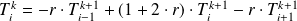 , toujours avec 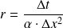 .
L'équation ci-dessous est appelée schéma implicite car la température à l'instant 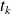 est exprimée en fonction de la température à l'instant ultérieur 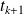 .
Le système d'équations ainsi obtenu peut être écrit sous la forme :
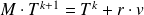
où
 est une matrice carrée
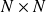
et
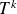
et
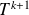
sont les vecteurs de dimension
est une matrice carrée
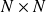
et
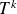
et
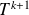
sont les vecteurs de dimension
 définis par :
définis par :
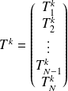 et 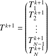 .
et
 est un vecteur de taille N faisant intervenir les conditions aux limites.
est un vecteur de taille N faisant intervenir les conditions aux limites.
Alors 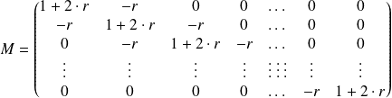 et 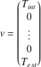
Algorithme de Thomas
Cet algorithme permet de résoudre un système matriciel tri-diagonal de la forme :
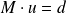
où
est une matrice de dimensions
tri-diagonale, c'est à dire une matrice dont tous les éléments sont nuls, sauf sur la diagonale principale, la diagonale supérieure et la diagonale inférieure.
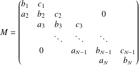 et
et où les vecteurs
 et
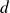
, de dimension
, s'écrivent :
et
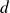
, de dimension
, s'écrivent :
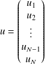 et 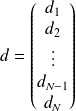
Dans cet algorithme, on calcule d'abord les coefficients suivants :
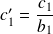
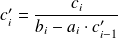 pour 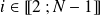 .
et
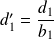
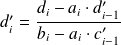 pour .
Les inconnues 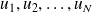 sont alors obtenues par les formules :
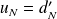
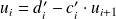 pour 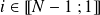 .
Question
En utilisant l'algorithme de Thomas, écrire une fonction CalcTkp1 qui permet de calculer le vecteur
, solution du système matriciel
, à partir de la matrice
et du vecteur
.
Attention :
L'écriture de cette fonction est particulièrement pénible en Python car les indices commencent à 0 et non à 1. Il faut donc choisir une indexation et s'y tenir...
C'est ici que les commentaires dans vos fonctions vont être essentiels si vous souhaitez que le correcteur ait envie de vous lire jusqu'au bout.
def CalcTkp1 (M, d) :
'''renvoie le vecteur u tel que M.u = d selon l'algorithme de Thomas.M est une matrice tridiagonale de type array,d est un vecteur colonne de type array.Le vecteur u renvoye est aussi un vecteur colonne de type array.'''N = len(d) # Nombre de lignes de d, donc sa dimension
cprime = np.zeros(N - 1)
cprime[0] = M[0, 1] / M[0,0] # Attention c'1 = cprime[0]
for i in range(1, N - 1): # coherence avec les i - 1 du sujet
cprime[i] = M[i, i + 1] / (M[i, i] - \
M[i, i - 1] * cprime[i - 1])
dprime = np.zeros(N)
dprime[0] = d[0, 0] / M[0,0] # Attention d'1 = dprime[0]
for i in range(1, N):
dprime[i] = (d[i, 0] - M[i, i - 1] * dprime[i - 1]) / \
(M[i, i] - M[i, i - 1] * cprime[i - 1])
u = np.zeros((N, 1)) # u est un vecteur ligne avec u1 = u[0]
u[N - 1, 0] = dprime[N - 1] # le rang N - 1 correspond au rang N du sujet
for i in range(N - 2, - 1, -1): # decroissance de i
u[i, 0] = dprime[i] - cprime[i] * u[i + 1, 0]
return (u)
Complément :
Tester votre programme avec les données suivantes.
M = np.array([[1, 4, 0, 0, 0], \
[1, -1, 1, 0, 0], \
[0, -1, 1, 1, 0], \
[0, 0, 2, 1, 0], \
[0, 0, 0, -1, 4]])
D = np.array([[1], [3], [3], [5], [-5]])
Si votre algorithme est correct, il doit vous renvoyer le vecteur suivant.
>>> CalcTkp1(M, D)
array([[ 1.],
[ 0.], [ 2.], [ 1.],[-1.]])
Dans la suite de cette étude, une fonction schema_implicite est élaborée avec les mêmes arguments d'entrée et de sortie que la fonction schema_explicite et qui utilise les mêmes critères d'arrêt.
Question
Écrire l'en-tête de la fonction en précisant les paramètres d'entrée et de sortie.
Cette partie n'est qu'une modification de l'algorithme utilisant le schéma explicite, beaucoup de ces questions vont donc être redondantes.
def schema_implicite(T0, ItMax, Dt, N, e = 40e-2, Lambda = 1.65, Rho = 2150, \
c = 1000, T_int = 293, T_ext = 263, epsilon = 1e-2):
'''renvoie le nombre d'iterations effectuees et une matrice de N lignescontenant les temperatures a l'instant k en chaque point declare de la paroi,par la methode des differences finies en utilisant un schema implicite.'''Alpha = Rho * c / Lambda
Dx = e / (N + 1)
r = Dt / (Alpha * pow(Dx, 2))
Question
Affecter la valeur 2 000 à ItMax. Créer la matrice T_tous_k dont les dimensions sont 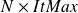 en la remplissant de zéros.
ItMax doit être défini hors de la fonction schema_implicite puisque nous l'avons déclaré dans les arguments.
ItMax = 2000
Par contre, T_tous_k doit être initialisé dans l'espace globale de la fonction schema_implicite.
T_tous_k = np.zeros((N, ItMax))
Question
Remplacer la 1ère colonne de T_tous_k par le vecteur des valeurs initiales T0.
for i in range(N):
T_tous_k[i, 0] = T0[i, 0]
Question
Définir la matrice
et le vecteur
qui interviennent dans l'équation
.
# Definition de MM = np.zeros((N, N))
M[0, 0], M[0, 1] = 1. + 2. * r, -r
for ligne in range(1, N - 1) :
M[ligne, ligne - 1], M[ligne, ligne], M[ligne, ligne + 1] = \
-r, 1. + 2. * r, -r
M[-1, -2], M[-1, -1] = -r, 1. + 2. * r
# Definition de vv = np.zeros((N, 1))
v[0, 0], v[-1, 0] = T_int, T_ext
Question
Calculer le profil de température à l'instant
 (
(
 ). Affecter ces valeurs à la deuxième colonne de T_tous_k.
). Affecter ces valeurs à la deuxième colonne de T_tous_k.
d = T0 + r * v
res = CalcTkp1(M, d)
for i in range(N):
T_tous_k[i, 1] = res[i]
Question
Élaborer une boucle permettant de calculer itérativement le profil de température aux instants
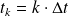
avec
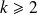
en prévoyant un arrêt lorsque la norme 2 du vecteur
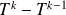
deviendra inférieure à
 ou lorsque le nombre d'itérations atteint la valeur
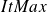
(prévoir les deux cas). Utiliser, pour cela, la fonction calc_norme définie lors de la partie précédente.
ou lorsque le nombre d'itérations atteint la valeur
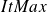
(prévoir les deux cas). Utiliser, pour cela, la fonction calc_norme définie lors de la partie précédente.
k = 2
condition = True
while condition and k < ItMax - 1 :
D = np.zeros((N, 1))
for i in range(N):
D[i] = T_tous_k[i, k - 1] + r * v[i]
res = CalcTkp1(M, D)
for i in range(N):
T_tous_k[i, k] = res[i]
if calc_norme(T_tous_k[:, k] - T_tous_k[:, k - 1]) < epsilon :
condition = False
k += 1
Question
Écrire la fin de la fonction afin de renvoyer tous les arguments de sortie définis au début de cette partie.
return (k - 1, T_tous_k)